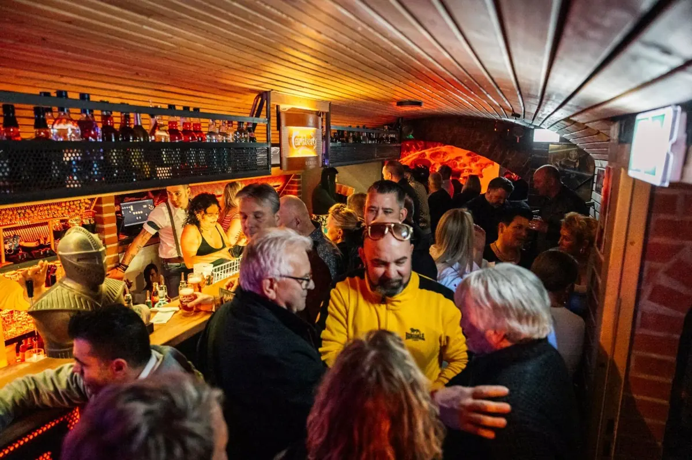

Geburtstag
Die ganze Bar für deine Gäste: Cocktails an der Theke, Discokugel über der Tanzfläche und die Hits, bei denen jeder mitsingt.

Private Veranstaltungen in Celle
Geburtstag, Firmen-Event oder Motto-Party: Die Bar Zeitreise kann nach Absprache exklusiv für dich gebucht werden – mit der Musik der 70er, 80er und 90er.
Anlässe
Die ganze Bar für deine Gäste: Cocktails an der Theke, Discokugel über der Tanzfläche und die Hits, bei denen jeder mitsingt.
Teamabend, Jubiläum oder Weihnachtsfeier in nostalgischem Ambiente – nach Absprache exklusiv für euer Unternehmen.
70er, 80er oder 90er: Sucht euch ein Jahrzehnt aus – die Musik dazu liefern wir.
So läuft's
Kontakt
Alle Details besprechen wir persönlich – telefonisch oder per Nachricht auf Instagram und Facebook. Anfragen über die Website gibt es bewusst nicht.
Reguläre Öffnungszeiten: Freitag & Samstag, 20:00 – 01:00 Uhr. Private Feiern nach Absprache.
Gut zu wissen
Ja. Die Zeitreise kann nach Absprache exklusiv für private Feiern gebucht werden, zum Beispiel für Geburtstag, Firmen-Event oder Motto-Party. Anfragen sind telefonisch unter 0176 / 10383288 oder über Instagram möglich.
Die Zeitreise spielt Musik der 70er, 80er und 90er Jahre: Disco-Beats der 70er, Synthie-Pop der 80er sowie Grunge- und Eurodance-Hits der 90er.
Die Bar Zeitreise ist ab 18 Jahren zugänglich.
Die Bar Zeitreise befindet sich in der Hehlentorstraße 16, 29221 Celle (Niedersachsen). Die nächste Bushaltestelle ist Schloßplatz. Route in Google Maps planen.